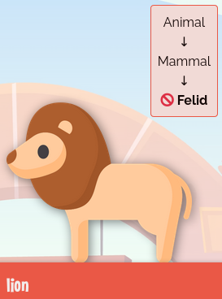
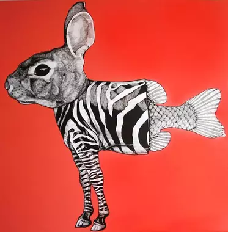
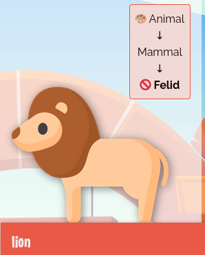
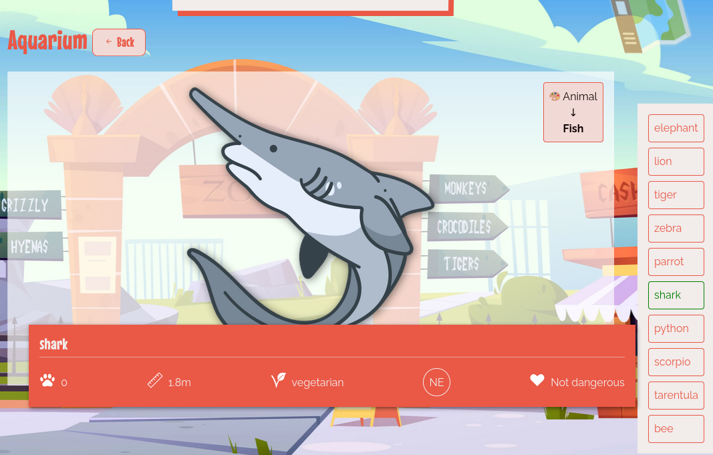

POO9 - Abstraction
Prérequis
Introduction
Il est temps de passer à la branche poo9 de ton Wild zoo. Dans cette quête, tu vas découvrir le concept d'abstraction et comprendre comment l'implémenter.
🤓 À la fin de cette quête, tu seras capable de :
- ✅ Comprendre le concept d'abstraction
- ✅ Créer une classe abstraite
- ✅ Implémenter une méthode abstraite
Définition de l'abstraction
Une fois encore, l'un des objectifs de la programmation orientée objet est de coller au plus proche à la réalité métier. Jusqu'à maintenant, nous avons créé une classe Animal, puis des classes filles sur plusieurs niveaux, pour terminer par des classes avec le mot clé final.
Pour rappel, l'interface graphique t'indique dans un petit encart en haut à droite de chaque animal, les relations d'héritages entre les classes. Pour l'instant, le lion est une instance de Felid (classe finale 🚫), héritant de Mammal, qui hérite elle-même de Animal.

Maintenant, si on crée un nouvel animal directement à partir de la classe Animal, on obtient bien un objet de type Animal, mais d'un point de vue métier, pour notre zoo, cela n'a plus trop de sens, car ce pourrait-être aussi bien une fourmi qu'une baleine. Cette instance n'est plus représentative d'un d'animal précis, c'est un concept, une notion abstraite. De ce fait, il n'est pas logique de demander la size d'un concept d'animal aussi variable. La classe Animal est très utile pour y mettre du code commun entre tous les animaux, mais on souhaiterait ne pas pouvoir directement instancier cette classe. C'est à cela que sert le concept d'abstraction en POO, empêcher que l'on puisse instancier certaines classes, quand celles-ci ne représentent pas quelque chose de concret mais uniquement des concepts abstraits.

Classe abstraite
Pour créer ce type de classe abstraite, il suffit d'utiliser le mot clé abstract devant le nom de la classe.
🖥️ Sur l'interface, tu vois un $abstractAnimal qui s'appelle "abstract". Dans le fichier index.php, tu constateras que c'est une instance d'Animal.
Modifie maintenant la classe Animal pour la rendre abstraite.
abstract class Animal
{
//...
}
Réactualise l'interface, tu vas obtenir une erreur.
Fatal error: Uncaught Error: Cannot instantiate abstract class App\Animal\Animal in ...
C'est normal, maintenant que la classe est devenue abstraite, PHP refuse de créer un objet directement à partir de celle-ci. Tu vas donc être forcé de passer par l'une de ses classes filles non abstraite. Efface ce $abstractAnimal et enlève le du tableau $animals. Réactualise, la page se réaffiche bien.
Tu constateras également sur le schéma récapitulatif de chaque animal, que la classe Animal est maintenant accompagnée du symbole 🎨 qui indique ici qu'elle est abstraite.

🖥️ Pour mettre en pratique, rend également la famille des Arthropodes abstraites. Tu ne peux plus instancier directement des Arthropode, mais toujours des Arachnide ou des Insect.
Méthode abstraite
🖥️ De la même manière que pour les animaux, la classe Area est un concept abstrait, modifie-la en conséquence.
Chaque classe fille d'Area (Aquarium, Desert...) correspond à une aire bien précise du zoo, ayant ses caractéristiques et étant adaptée à certains animaux. Par exemple, un aquarium est adapté aux animaux aquatiques, une volière aux animaux volants, etc. Lorsque tu ajoutes un animal dans une zone, il faudrait pouvoir vérifier que cet animal est bien compatible avec la zone en question.
Pour cela, on aimerait avoir une méthode isValid(Animal $animal) qui prendrait un animal en paramètre. La méthode renverrait un booléen si l'animal est compatible ou non avec la zone.
Cette méthode devra être utilisée dans la méthode addAnimal() et lever une exception si elle renvoie false, mets à jour comme cela :
public function addAnimal(Animal $animal)
{
if (!$this->isValid($animal)) {
throw new \Exception('impossible d\'ajouter le ' . $animal->getName() . ' au ' . $this->getName());
}
$this->animals[] = $animal;
}
Cette validation se fait au niveau de la classe mère Area, car la logique est la même pour toutes les classes filles.
🚫 Le code ne fonctionne pas pour le moment puisque la méthode méthode isValid() n'est pas encore créée. Cependant, la logique d'implémentation de isValid() est différente d'une Area à l'autre (entre un Aquarium, une jungle, un désert...), il n'est donc pas possible de définir UNE logique précise dans la classe Area, dont hériterait toutes les filles. La méthode DOIT exister dans chaque fille (avec la même signature) MAIS la logique d'implémentation (c'est-à-dire le corps de la méthode) est différente entre chacune de ces filles. C'est ce qu'on appelle une méthode abstraite.
Pour créer une méthode abstraite, il faut ajouter le mot clé abstract devant le nom, mais laisser le corps de la fonction vide, donc finir la ligne directement par un point virgule, sans les accolades :
abstract public function isValid(Animal $animal): bool;
Il faut indiquer les éventuels paramètres et leur type (ici Animal $animal), ainsi que le type de retour (ici bool).
À partir de maintenant, toutes les classes filles héritent de la méthode abstraite et sont donc obligées d'implémenter une logique pour cette méthode, sinon PHP renverra une erreur.
Une classe possédant au moins une méthode abstraite doit forcément être elle-même abstraite (et ne pourra donc plus être directement instanciée sans passer par une fille).
Si tu réactualises, tu vas avoir le message d'erreur suivant pour chaque classe fille d'Area, indiquant l'obligation d'implémenter la méthode isValid() héritée de la mère :
Fatal error: Class App\Area\XXXX contains 1 abstract method and must therefore be declared abstract or implement the remaining methods (App\Area\Area::isValid)
Dans chaque classe fille, tu vas donc devoir implémenter isValid() avec une logique qui lui est propre. Voici l'implémentation qui est attendue pour les 3 classes existantes :
- Aquarium : ne sont valides que les animaux de type Fish
- Jungle : accepte tous les animaux
- Desert : ne sont valides que les animaux ayant 4 pattes ou plus
Click to reveal|||php|||Si tu as besoin d'aide, voici la solution attendue pour l'implementation de isValid() dans la classe Aquarium. Cela peut te servir de base pour les deux autres classes.|||0|||Hide
<?php
namespace App\Area;
use App\Animal\Animal;
use App\Animal\Fish;
class Aquarium extends Area
{
public function isValid(Animal $animal): bool
{
return $animal instanceof Fish;
}
}
Une fois les 3 implémentations effectuées, tu vas encore avoir des erreurs car certains animaux sont actuellement affectés dans de mauvaises zones. Fais en sorte de corriger les erreurs en retirant ou modifiant les animaux qui seraient dans les mauvaises Area afin de suivre les règles métiers du zoo (normalement le crocodile ne devrait pas se trouver dans l'aquarium car ce n'est pas un poisson, remplace-le par un requin (shark)) .
🖥️ Lorsque tu te rends sur la page d'une zone (en passant par la carte en haut à droite de l'interface), tu vois maintenant à droite de la page la liste de tous les animaux : en vert ceux qui sont acceptables dans cette zone, en rouge les autres.

💪 Challenge
Pour ce challenge, ajoute deux nouvelles classe fille d'Area : Box et Cage.
- Box acceptera uniquement les animaux de taille <50,
- Cage uniquement les animaux dangereux (utilise la méthode
isDangerous()préalablement créée)
Puis ajoute des animaux compatible dans chacune.
Validation
Les classes Cage et Box sont correctement créées et apparaissent sur la carte dans l'interface.
Des animaux compatibles avec la méthode isValid() sont ajoutés à ces deux nouvelles zones.
==$==
<?php
namespace App\Area;
use App\Animal\Animal;
class Cage extends Area
{
public function isValid(Animal $animal): bool {
return $animal->isDangerous();
}
}
<?php
namespace App\Area;
use App\Animal\Animal;
class Box extends Area
{
public function isValid(Animal $animal): bool {
return $animal->getSize() < 50;
}
}